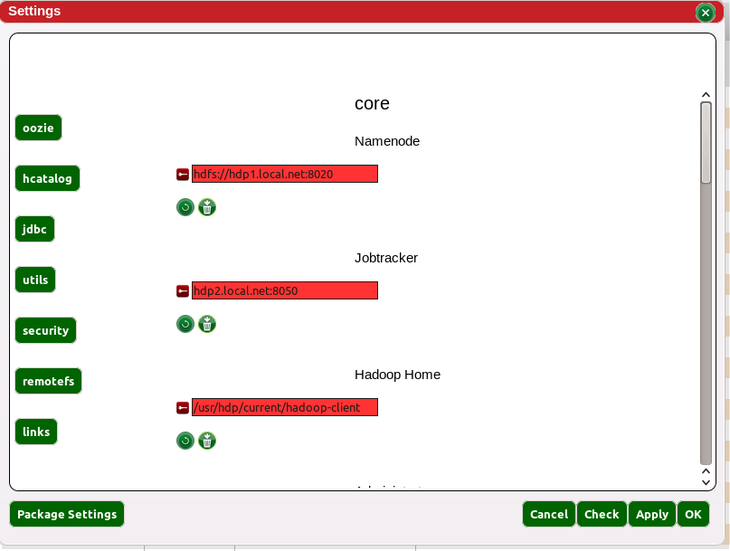

The setting view contains all the parameters regarding Red Sqirl core functionalities. For viewing package related parameters, the user should go to the package settings button on the bottom left. Settings are organised into hierarchical sections.
The settings have two scopes, System on the left - shared by everybody - and User. User settings will always overwrite system settings (if both are available).
Each setting has a label and a description.
